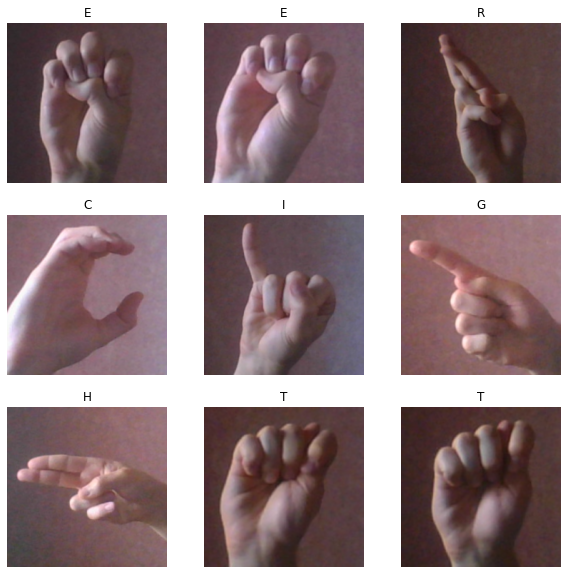
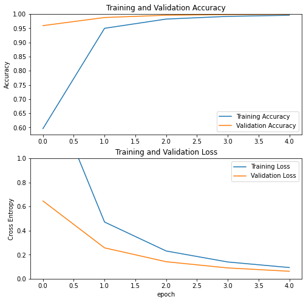
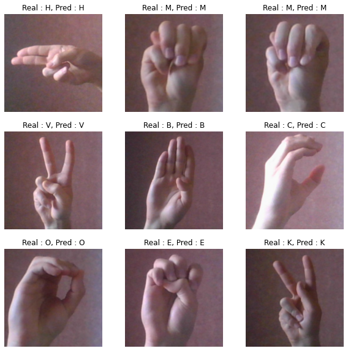

import numpy as np
import pandas as pd
import matplotlib.pyplot as plt
import tensorflow as tf
from tensorflow.keras.preprocessing \
import image_dataset_from_directory
import pathlib, splitfolders2022-07-22 08:06:16.598194: I tensorflow/stream_executor/platform/default/dso_loader.cc:49] Successfully opened dynamic library libcudart.so.11.0
directory = "/kaggle/input/sign-language-eng-alphabet/Images/"
data_bs = pathlib.Path(directory)
splitfolders.ratio(data_bs, output = "Imgs/", seed = 42, \
ratio = (0.7, 0.15, 0.15), group_prefix = None)Copying files: 24000 files [01:28, 270.13 files/s]
BATCH_SIZE = 32
IMG_SIZE = (224, 224)
train_dir = "/kaggle/working/Imgs/train/"
validation_dir = "/kaggle/working/Imgs/val/"
test_dir = "/kaggle/working/Imgs/test/"
train_dataset = image_dataset_from_directory(train_dir,
shuffle=True,
batch_size=BATCH_SIZE,
image_size=IMG_SIZE)
validation_dataset = image_dataset_from_directory(validation_dir,
shuffle=True,
batch_size=BATCH_SIZE,
image_size=IMG_SIZE)
test_dataset = image_dataset_from_directory(test_dir,
shuffle=True,
batch_size=BATCH_SIZE,
image_size=IMG_SIZE)class_names = train_dataset.class_names
plt.figure(figsize=(10, 10))
for images, labels in train_dataset.take(1):
for i in range(9):
ax = plt.subplot(3, 3, i + 1)
plt.imshow(images[i].numpy().astype("uint8"))
plt.title(class_names[labels[i]])
plt.axis("off")2022-07-22 08:07:51.119586: I tensorflow/compiler/mlir/mlir_graph_optimization_pass.cc:116] None of the MLIR optimization passes are enabled (registered 2)
2022-07-22 08:07:51.120483: I tensorflow/core/platform/profile_utils/cpu_utils.cc:112] CPU Frequency: 2000170000 Hz
2022-07-22 08:07:51.685504: W tensorflow/core/framework/cpu_allocator_impl.cc:80] Allocation of 19267584 exceeds 10% of free system memory.

AUTOTUNE = tf.data.AUTOTUNE
train_dataset = train_dataset.prefetch(buffer_size=AUTOTUNE)
validation_dataset = validation_dataset.prefetch(buffer_size=AUTOTUNE)
test_dataset = test_dataset.prefetch(buffer_size=AUTOTUNE)# Create the base model from the pre-trained model MobileNet V2
IMG_SHAPE = (224, 224, 3)
base_model = tf.keras.applications.MobileNetV2(input_shape=IMG_SHAPE,
include_top=False,
weights='imagenet')
base_model.trainable = FalseDownloading data from https://storage.googleapis.com/tensorflow/keras-applications/mobilenet_v2/mobilenet_v2_weights_tf_dim_ordering_tf_kernels_1.0_224_no_top.h5
9412608/9406464 [==============================] - 0s 0us/step
preprocess_input = tf.keras.applications.mobilenet_v2.preprocess_input
global_average_layer = tf.keras.layers.GlobalAveragePooling2D()
prediction_layer = tf.keras.layers.Dense(24, activation = "softmax")inputs = tf.keras.Input(shape=(224, 224, 3))
x = preprocess_input(inputs)
x = base_model(x, training=False)
x = global_average_layer(x)
x = tf.keras.layers.Dropout(0.2)(x)
outputs = prediction_layer(x)
model = tf.keras.Model(inputs, outputs)base_learning_rate = 0.0001
model.compile(optimizer=tf.keras.optimizers.Adam(lr=base_learning_rate),
loss=tf.keras.losses.SparseCategoricalCrossentropy(),
metrics=['accuracy'])history = model.fit(train_dataset,
epochs=5,
validation_data=validation_dataset)acc = history.history['accuracy']
val_acc = history.history['val_accuracy']
loss = history.history['loss']
val_loss = history.history['val_loss']
plt.figure(figsize=(8, 8))
plt.subplot(2, 1, 1)
plt.plot(acc, label='Training Accuracy')
plt.plot(val_acc, label='Validation Accuracy')
plt.legend(loc='lower right')
plt.ylabel('Accuracy')
plt.ylim([min(plt.ylim()),1])
plt.title('Training and Validation Accuracy')
plt.subplot(2, 1, 2)
plt.plot(loss, label='Training Loss')
plt.plot(val_loss, label='Validation Loss')
plt.legend(loc='upper right')
plt.ylabel('Cross Entropy')
plt.ylim([0,1.0])
plt.title('Training and Validation Loss')
plt.xlabel('epoch')
plt.show()
loss, accuracy = model.evaluate(test_dataset)
print('Test accuracy :', accuracy)113/113 [==============================] - 8s 63ms/step - loss: 0.0629 - accuracy: 0.9994
Test accuracy : 0.9994444251060486
#Retrieve a batch of images from the test set
image_batch, label_batch = test_dataset.as_numpy_iterator().next()
predictions = model.predict_on_batch(image_batch)ans = []
for i in range(len(predictions)):
ans.append(predictions[i].argmax())
ans = np.array(ans)print('Predictions:\n', ans)
print('Labels:\n', label_batch)Predictions:
[ 7 11 11 20 1 2 13 4 9 9 0 21 11 7 5 20 10 19 1 0 9 0 22 0
12 20 9 17 4 14 4 6]
Labels:
[ 7 11 11 20 1 2 13 4 9 9 0 21 11 7 5 20 10 19 1 0 9 0 22 0
12 20 9 17 4 14 4 6]
plt.figure(figsize=(10, 10))
for i in range(9):
ax = plt.subplot(3, 3, i + 1)
plt.imshow(image_batch[i].astype("uint8"))
plt.title(f"Real : {class_names[label_batch[i]]}, Pred : {class_names[ans[i]]}")
plt.axis("off")